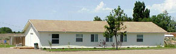

daniel part1.mp3
daniel part2.mp3
daniel part3.mp3
daniel part4.mp3
daniel part5.mp3
daniel part6.mp3
daniel part7.mp3
daniel part8.mp3
daniel part9.mp3
daniel part10.mp3
daniel part11.mp3
daniel part12.mp3
daniel part13.mp3
daniel part14.mp3
daniel part15.mp3
daniel part16.mp3
daniel part17.mp3
daniel part18.mp3
daniel part19.mp3
daniel part20.mp3
daniel part21.mp3
daniel part22.mp3
daniel part23.mp3
daniel part24.mp3
daniel part25.mp3
daniel part26.mp3
daniel part27.mp3
daniel part28.mp3
habakkuk part1.mp3
habakkuk part2.mp3
habakkuk part3.mp3
habakkuk part4.mp3
habakkuk part5.mp3
habakkuk part6.mp3
habakkuk part7.mp3
habakkuk part8.mp3
acts part01.mp3
acts part02.mp3
acts part03.mp3
acts part04.mp3
acts part05.mp3
acts part06.mp3
acts part07.mp3
acts part08.mp3
acts part09.mp3
acts part10.mp3
acts part11.mp3
acts part12.mp3
acts part13.mp3
acts part15.mp3
acts part16.mp3
acts part18.mp3
acts part19.mp3
acts part20.mp3
acts part21.mp3
acts part22.mp3
acts part23.mp3
acts part24.mp3
acts part25.mp3
acts part26.mp3
acts part27.mp3
acts part28.mp3
acts part29.mp3
1corinthians part3.mp3
1corinthians part4.mp3
1corinthians part5.mp3
1corinthians part6.mp3
1corinthians part7.mp3
1corinthians part8.mp3
1corinthians part9.mp3
1corinthians part10.mp3
1corinthians part11.mp3
1corinthians part12.mp3
1corinthians part13.mp3
1corinthians part14.mp3
1corinthians part15.mp3
1corinthians part16.mp3
1corinthians part17.mp3
1corinthians part18.mp3
1corinthians part19.mp3
1corinthians part23.mp3
1corinthians part24.mp3
1corinthians part25.mp3
1corinthians part26.mp3
1corinthians part27.mp3
1corinthians part28.mp3
1corinthians part29.mp3
1corinthians part30.mp3
1corinthians part31.mp3
1corinthians part32.mp3
1corinthians part33.mp3
1corinthians part34.mp3
1corinthians part36.mp3
1corinthians part37.mp3
1corinthians part38.mp3
1corinthians part39.mp3
1corinthians part40.mp3
1corinthians part41.mp3
1corinthians part42.mp3
1corinthians part43.mp3
1corinthians part44.mp3
1corinthians part47.mp3
1corinthians part48.mp3
1corinthians part49.mp3
1corinthians part51.mp3
galatians part1.mp3
galatians part2.mp3
galatians part3.mp3
galatians part4.mp3
galatians part5.mp3
galatians part6.mp3
galatians part7.mp3
galatians part8.mp3
galatians part9.mp3
galatians part10.mp3
galatians part11.mp3
galatians part12.mp3
galatians part13.mp3
galatians part14.mp3
galatians part15.mp3
galatians part16.mp3
galatians part17.mp3
galatians part18.mp3
galatians part19.mp3
galatians part20.mp3
galatians part21.mp3
colossians part1.mp3
colossians part2.mp3
colossians part3.mp3
colossians part5.mp3
colossians part8.mp3
1tim part1.mp3
1tim part2.mp3
1tim part3.mp3
1tim part4.mp3
1tim part5.mp3
1tim part6.mp3
1tim part7.mp3
1tim part9.mp3
1tim part10.mp3
1tim part11.mp3
1tim part12.mp3
1tim part13.mp3
1tim part14.mp3
2tim part1.mp3
2tim part2.mp3
2tim part3.mp3
2tim part4.mp3
2tim part5.mp3
2tim part6.mp3
2tim part7.mp3
2tim part8.mp3
2tim part9.mp3
2tim part10.mp3
2tim part11.mp3
2tim part12.mp3
2tim part13.mp3
2tim part14.mp3
Amos
Daniel Part 1
Daniel Part 2
Ecclesiates
Esther
Ezekiel Part 1
Ezekiel Part 2
Ezekiel Part 3
Genesis
Habukkuk
Haggai
Hosea
Isaiah
Jeremiah
Joel
Jonah
Lamentations
Malachi
Micah
Naham
Obadiah
Poetry Intro
Proverbs
Psalms
Song of Solomon
Zechariah Part 1
Zechariah Part 2
Zephaniah
christmas 2001.mp3
history and the birth of christ.mp3
the three kings.mp3
01 doctrine of the bible.mp3
02 doctrine of god.mp3
03 doctrine of creation.mp3
04 doctrine of sin.mp3
05 doctrine of the church.mp3
entering-christian-service-part1.mp3
entering-christian-service-part2.mp3
entering-christian-service-part3.mp3
entering-christian-service-part4.mp3
entering-christian-service-part5.mp3
entering-christian-service-part6.mp3
entering-christian-service-part7.mp3
entering the kingdom of god.mp3
entering the land part1.mp3
entering the land part2.mp3
entering the land part3.mp3
entering the land part4.mp3
entering the land part5.mp3
entering the land part6.mp3
entering the land part7.mp3
entering the land part8.mp3
entering the land part9.mp3
entering the land part10.mp3
entering the land part11.mp3
entering the land part12.mp3
entering the land part13.mp3
entering the land part14.mp3
entering the land part15.mp3
entering the land part16.mp3
entering the land part17.mp3
entering the land part18.mp3
entering the land part19.mp3
entering the land part20.mp3
entering the land part21.mp3
entering the land part22.mp3
entering the land part23.mp3
entering-the-war part1.mp3
entering-the-war part2.mp3
entering-the-war part3.mp3
entering-the-war part5.mp3
entering-the-war part6.mp3
Total Depravity
Unconditional Election
Limited Atonement
Irresistible Grace
Perseverance of the Saints
Sharing the Faith
The Great Commission

Dedicated to the memory of Pastor Jack Hurley
After 15 years of being offline this website is being "Resurrected"
It is time to dust off your Bibles, and get back into the Word of God. I've spent over a year remastering the tapes, there is over 12GBs of old and new recordings, several additional books of the Bible, topical, and prophecy teachings spanning from 1984 to 2004
Pastor at Grace Fellowship from 1993-2004
Pastor Jack went to be with the Lord suddenly in February 2004.
Following his twenty year career in the Air Force with a tour in the Viet Nam as a RF-4C pilot, pastor Jack Hurley retired from Mountain Home AFB. After retirement, he attended and graduated from Trinity Evangelical Divinity School in Deerfield, IL with a Master of Divinity degree. While at seminary, he pastored a small church in a neighboring town.
Upon graduation, he accepted a call to Grace Evangelical Church in Ship Bottom, New Jersey, pastoring that church for 8 1/2 years. From there he moved to Phoenix, Arizona where he ministered to small churches in the outlying mining towns for three years. In December of 1993, Pastor Hurley returned to Mountain Home and began Calvary Chapel, which is now called Grace Fellowship. Starting with three couples, our church has grown to its present size.
Pastor Hurley believes in the return to biblical worship of our sovereign God and teaching through the books of the Bible verse by verse. One of his primary concerns is to see the people and families of our church grow in Christian maturity and unity through a living and active relationship with the Lord and with each other.
"The Lord bless you, and keep you;
The Lord make His face shine on you,
And be gracious to you;
The Lord lift up His countenance on you,
And give you peace."
Num. 6:24-26